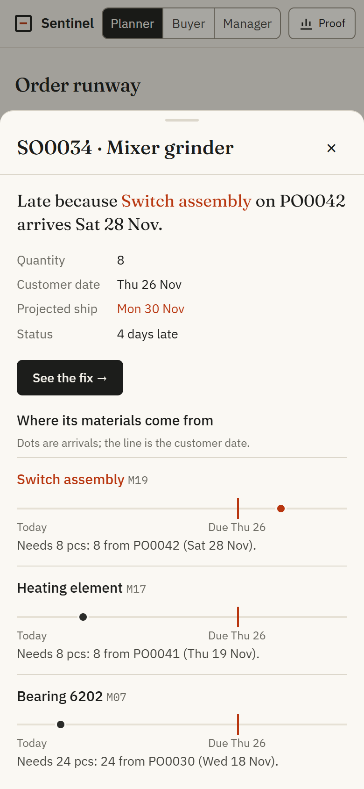
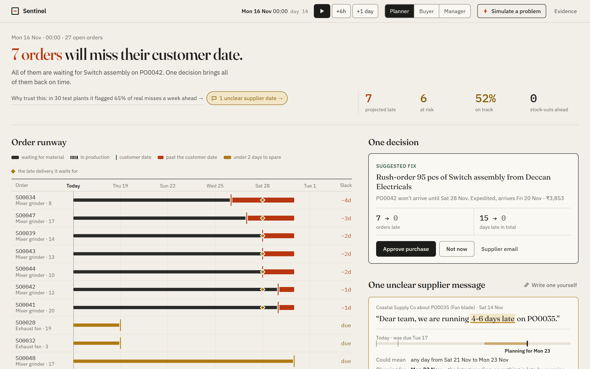

Resurrect 2026 hackathon · Problem 2: Smart Inventory Intelligence · written 27 November 2026
What we built, why, and how it works, explained from zero. No technical knowledge needed.
Try it yourself: https://chatu.in (works on phone and laptop)
The whole idea in one breath
Factories promise customers a delivery date. To keep that promise, the factory needs the right parts at the right time. Parts often come late, and people usually find out too late to fix it. Sentinel watches everything happening in the factory, spots a coming delay a week or more in advance, tells you exactly why, and suggests a fix. A person always makes the final decision.
What's inside:
Resurrect 2026 gave us 6 problems to choose from:
| # | Problem | In simple words |
|---|---|---|
| 1 | Rapid Knowledge Internalization | Help people understand hundreds of pages quickly |
| 2 | Smart Inventory Intelligence | Help a factory deliver orders on time ← we chose this |
| 3 | Human-Agent Interaction | A new way for people and AI to work together |
| 4 | Self-Learning UI | An app screen that improves itself from how people use it |
| 5 | Embedding model + visualizer | Show how AI organises the meaning of words |
| 6 | Ambiguity in language | Spot sentences that can mean two things |
The most important rule in the whole hackathon: every team must prove its solution works with measured numbers. The rules say: "Claims without measured evidence will not be scored." So it is not enough to build something that looks good. We must show numbers, compare against the normal way of doing things, and let anyone check our work.
Why Problem 2?
Imagine a factory that makes mixer grinders, fans, heaters and geysers.
A shop orders 13 mixer grinders and says: "We need them by day 21." The factory says yes. That promised day is called the customer date.
To build 13 mixer grinders, the factory needs parts: switches, bearings, heating elements. It has some parts in its store room. The rest are coming from suppliers (other companies that sell parts).
Now, one supplier quietly becomes late. The switches that were coming on day 19 will now come on day 26. Building takes 2 days, so the mixer grinders will ship on day 28, 7 days late.
And it's not only this one order. Six orders were all waiting for those same switches. All six will be late.
The real problem: in most factories, nobody notices until day 21 itself, when the order fails to go out. By then it's too late to do anything. The customer is unhappy, and the factory may lose them.
If someone had noticed on day 14, they could have quickly ordered switches from the supplier with fast delivery ("rush order"), and all seven orders would have shipped on time. Noticing early is everything. That's what Sentinel does.
| Word | What it means | Everyday example |
|---|---|---|
| Order | A customer asking to buy products | "Send us 13 mixer grinders" |
| Customer date (CRD) | The day we promised to deliver. CRD stands for Customer Request Date. | "By day 21" |
| Material / part | Things needed to build a product | Switches, bearings, paint |
| Supplier | A company that sells us materials | "Deccan Electricals" |
| Purchase order (PO) | Our order to a supplier, with a number like PO0042 | "Send us 95 switches by Fri 20 Nov" |
| Lead time | How many days a supplier needs to deliver | Normal delivery 7 days, rush delivery 4 days |
| Rush order (expedite) | Pay a bit more to get materials faster | Like paying extra for express delivery |
| On hand | Material already in our store room | "We have 34 switches" |
| Incoming | Material ordered but not yet arrived | "200 switches are on the way" |
| Allocated | Material already promised to orders | "121 switches are needed for orders we accepted" |
| Net availability | On hand + incoming − allocated. What's really free. | 34 + 200 − 121 = 113 free |
| Days of cover | How many days our stock will last | "0.5 days of cover" means we run out tomorrow |
| Stock-out | Running out of a material | No switches left for the next order |
| Planner | Person who decides what gets built when | The main user of Sentinel |
| Buyer | Person who buys materials from suppliers | Sends the purchase orders |
| Manager | Boss who watches the big picture | Can see everything but can't approve purchases |
| Event | A small message saying something happened | "Order placed", "goods arrived", "stock counted" |
| Feed | A steady stream of events from one system | The warehouse system sends a message every time goods arrive |
| ERP / WMS | The factory's office software (orders) / warehouse software (stock) | Like the factory's diary and its store-room register |
| Simulator | A pretend factory that runs inside the computer | Like a video game version of a factory |
| AI agent | A computer helper that looks at the data and suggests actions | An assistant who says "I think you should order this" |
We named it Sentinel, which means a guard who keeps watch. It has five parts. Think of it like a person:
On top of that, we built a sixth piece used only for testing and the demo:
Here is the exact story you will see in the demo (dates are in the pretend factory's calendar):
Without Sentinel, the factory would have discovered the problem on the customer date itself, a week later, when it was too late.
Open https://chatu.in. Each visitor gets their own pretend factory, so nobody can disturb your screen. Here is what each part means.

The laptop view on Mon 16 Nov, right after the supplier delay.
One big sentence that tells you the most important thing right now, for example "7 orders will miss their customer date", with the reason underneath and a link "Why trust this". Next to it are four numbers: projected late, at risk (less than 2 days to spare), percentage on track, and stock-outs ahead.
Each row is one order. The bar starts today and ends on the day the order will really ship.
The helper's suggestion, what it costs, and what it changes (late orders before → after). Buttons: Approve purchase, Not now, and Supplier email (to view the draft). When there are several, the best one is marked "Recommended".
Every message a supplier sent, marked Clear, Unclear or No date. Unclear ones get a card with the possible dates, the day Sentinel plans for, and a drafted question. Write one yourself lets anyone type a message and watch Sentinel read it.
A short note written for the person you selected. At the bottom it says how many figures and dates were checked against the data.
The six thinnest materials (press "Show all" for all 24) with on hand, incoming, allocated and net. The little bar shows days of cover; the amber tick is the supplier's lead time. A red bar means cover is shorter than the lead time: a new order would arrive too late.
Health of the three data feeds (orders, warehouse, supplier), plus warnings like "PO0016 was due Sun 15 Nov and has not arrived" or "Demand spike on Room heater".

On a phone: the Today tab (left: the decision first, then the top of the runway) and an order's explanation (right). Four tabs at the bottom: Today, Orders, Stock, Signals.
How the test worked. We ran 30 different pretend factories, each for 60 days. Together they had 6,455 customer orders. The pretend factory secretly knows how every order really ends, like an answer key. Sentinel only sees the messages, never the answer key.
We compared against the normal way factories work today (a standard reorder rule: "when stock gets low, order more"). Under the normal way, 420 of the 6,455 orders (6.5%) were late. Every comparison uses exactly the same customer orders in each factory, so the only difference is the method.
Anyone can repeat every number below with one command. An independent reviewer did, and got exactly the same numbers.
Important, after the review (27 Nov): two independent reviewers checked everything. Some of our earlier "100%" numbers were true mostly because of how we built the pretend factory, and one comparison was not fully fair. We fixed it and now show which numbers are real evidence and which are only sanity checks. The numbers below are the corrected ones. Please don't use the old ones (92.6% → 96.3%, "100% caught", "no extra spend").
| Average per factory (60 days) | Normal way | With Sentinel | Change |
|---|---|---|---|
| Orders delivered on time | 93.4% | 96.7% | +3.2 points |
| Late orders | 14.0 | 7.1 | about half |
| Total days late (all orders added up) | 34.3 | 13.6 | 60% less |
| Days a material was out of stock when needed | 17.1 | 8.4 | 51% less |
| Money spent on purchases | ₹7,60,288 | ₹7,66,004 | +0.75% (a little more) |
Is that better than simple rules? We also tested two simple rules a factory could use without Sentinel:
| Method | On time | Spend compared to Sentinel | Stock held compared to Sentinel |
|---|---|---|---|
| "Rush-reorder every late delivery" | 96.5% | 9% more | 23% more |
| "Keep 4 days of extra safety stock" | 96.1% | 1.5% more | 4.5% more |
| Sentinel | 96.7% | – | – |
The honest message: simple rules can reach almost the same on-time level, but only by spending more and holding more stock. Sentinel gets there by buying only what is needed, only when it is needed.
Production takes 2 days, so 3 days before the date almost any warning is "late anyway". That's why we look further ahead:
| Warning given | Late orders caught | Warnings that were right |
|---|---|---|
| 3 days before | 97% | 73% |
| 5 days before | 73% | 69% |
| 7 days (a week) before | 65% | 73% |
| 10 days before | 36% | 73% |
| What we checked | Result | What it means |
|---|---|---|
| Stock numbers compared with a separate calculator | 0 mistakes in 129,600 checks | Every stock figure was right, every day, in every factory. |
| Messy messages: 1,797 repeated and 1,239 broken messages mixed in | 1,800 of 1,800 days identical | The answers with messy data were exactly the same as with clean data. |
| Feeding all messages again in a random order | 90 of 90 identical | Run it again, get the same answer. |
| A factory that doesn't follow our sharing rule | almost the same | Even when the real factory builds oldest-order-first, the warnings stay nearly as good. |
| Problem | Result | Notes |
|---|---|---|
| Warehouse or order system goes silent | 29 of 30 | About 20 hours after it went quiet (it waits 18 hours of silence). One very short outage was missed. |
| Sudden rush of orders | 60 of 60 | On the same day; 19 false alarms. |
| Stock quietly going missing | 77 of 86 | About 9 days later, when a routine stock count happened. It can't know before someone counts. |
We planted mistakes in the helper's notes on purpose and checked how many the safety check stops:
| Planted mistake | Stopped |
|---|---|
| "Nothing is late" when orders are late | 100% |
| An order number that doesn't exist | 100% |
| A number changed (e.g. 14 → 15) | 92% |
| Two numbers swapped | 44% |
So the check is strong but not perfect: swapped numbers mostly get through. Say so if asked.
Suppliers write things like "delayed to next week" or "2-3 days late". Sentinel works out every day the message could mean, plans for the latest day, and drafts one question for the supplier, sent only when a planner approves.
| What we checked | Result |
|---|---|
| Test messages written blind by a separate AI that never saw our code | 135 of 150 fully right (90%), first try |
| Planned a date too early (the dangerous mistake) | 3 of 121, vs 42 of 121 for a normal date reader |
| Planned a date too late (the safe mistake), until the supplier answers | 37 of 121 messages |
| Orders on time when suppliers write vaguely | 96.1% (normal date reader) → 96.7% (Sentinel) |
| After the supplier answers the question | planned date off by only 0.18 days on average |
The on-time gain here is small (+0.6 points) and only just significant. The real value is a correct date for the planner.
Who could use it? Any company that makes products from parts and promises delivery dates: appliances, electronics, furniture, auto parts, garments, medicines.
It's online at chatu.in, on our own server. Each visitor now gets their own pretend factory, so nobody can disturb a judge's screen.
A split for 4 members. With fewer people, combine roles.
| Member | Role | Must know well |
|---|---|---|
| 1 | Presenter and demo driver | The story (section 2), the demo (section 12), the headline numbers |
| 2 | Evidence and numbers owner | Sections 7 and 8; answers "how do you know it works?" |
| 3 | How-it-works explainer | The five parts (section 4), the sharing rule, supplier messages (7F) |
| 4 | Real-world and business | Section 9; who would use it, what a real factory needs, cost |
| Time | Do this | Say this |
|---|---|---|
| 0:00 | Open chatu.in, press Simulate → Start over | "Factories usually find out an order is late on the day it fails. Sentinel predicts every order's ship date, all the time." |
| 0:20 | Press +1 day ten times (to Mon 16 Nov) | "Every number comes from the factory's messages. Repeated or broken messages are ignored." |
| 0:40 | Simulate → A supplier slips a week | "A supplier just pushed a delivery back a week." |
| 0:50 | Point at the red headline, click a red row | "Seven orders will now miss their date, two weeks before it happens. They're all waiting for switches on PO0042." |
| 1:15 | Point at the decision card | "Sentinel already tested a fix: rush-order 95 switches. Late orders go from 7 to 0." |
| 1:35 | Switch to Manager, then back to Planner and press Approve | "Managers see it but can't buy. The planner approves. Nothing happened until a human said yes." |
| 2:00 | Simulate → A supplier writes something vague, press Send question, then +1 day | "Suppliers write 'next week' or '2-3 days late'. Sentinel plans for the latest day and asks one question. The supplier answered; the plan has the exact date. That's Topic 6 inside our app." |
| 2:25 | Open Evidence | "30 pretend factories, same orders in every test: on-time 93.4% to 96.7%, for 0.75% more spend. Simple rules spend 1.5 to 9% more for the same result." |
| 2:45 | "Our limits: it's a simulated factory and no real planner has used it yet. We wrote every failure down." |
Q: If I warn about every order not yet started, I also catch 100% three days ahead.
A: True, so we show a week ahead too. There, that lazy rule is right 20% of the time; Sentinel is right 73%.
Q: Is the gain just rush orders?
A: Yes, all of it. The point is which rush orders: a rule that rushes every late delivery gets the same on-time level but spends 9% more and holds 23% more stock.
Q: Does it spend more?
A: Yes, a little: +0.75%. We say that openly.
Q: How do you know your numbers are right?
A: A second, separate calculator: 0 mistakes in 129,600 checks. Messy messages and replays give exactly the same answers. An independent reviewer reran everything and got the same numbers.
Q: What if the AI makes things up?
A: A safety check stops 100% of false counts and fake order numbers and 92% of changed numbers, but only 44% of swapped numbers. If the AI's text fails the check, a safe template is shown instead.
Q: Who wrote your test messages for Topic 6?
A: Separate AI agents that only saw our rules page, never the code. We keep the first score on each set; the third set was saved in git before we scored it, so the order can be checked.
Q: Planning for the latest day means you're often too late?
A: Yes, until the supplier answers, on purpose. Too late in the plan means acting a bit early; too early means an order fails by surprise. After the answer, the plan is off by only 0.18 days.
Q: Can I approve a purchase from a command line?
A: In the demo, yes, but only inside your own pretend factory. A real company would use proper logins.
| What | Where |
|---|---|
| Live website | https://chatu.in |
| Code | GitHub: github.com/roshanvijay37/resurrect2026 (public for now) |
| Full results report | results/RESULTS.md and results/AMBIGUITY.md in the code |
| Demo script | DEMO.md in the code |
| Re-run every number | One command: python -m evaluation.run_eval --seeds 30 (takes a few seconds) |
| Automatic tests | 25 tests, all passing |
Technical summary for the curious: Python (FastAPI) server, a plain HTML/JavaScript website, running in a Docker container on our own Linux server behind HTTPS. AI writing (Claude) is optional and off by default; all suggestions and numbers come from rules we can check.